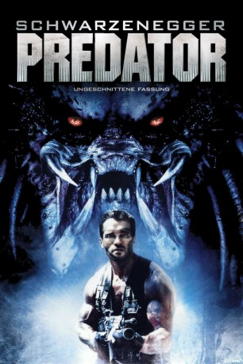

#317 Predator 1
Auszeichnungen: für 1 Oscars nominiert
 
 IMDB-Wertung: 7.8 / 10
IMDB-Wertung: 7.8 / 10  Metascore: 45
Metascore: 45 
Eine Routinemission wird zum Horrortrip. Das Spezialkommando unter Major Dutch Schaefer soll im mittelamerikanischen Dschungel Geiseln aus den Händen von Guerilleros befreien. Doch die Männer bekommen es nicht nur mit einer Handvoll Rebellen zu tun. In der grünen Hölle lauert ihnen ein Gegner auf, der nicht von dieser Welt ist. Eine Kreatur, die das Töten als reine Lust betrachtet – und Elitesoldaten als willkommene Jagdtrophäen.
Jahr: 1987
Dauer: 107 Minuten
FSK: 16
Land: USA Studio: 20th Century FoxTonspuren: DTS - ,
Untertitel:
Auflösung: 1080p (1920×1040) Größe: 8990 MB
Genre: Action, Thriller, Sci-Fi
Regisseur:  John McTiernan
John McTiernan
Drehbuch: Jim Thomas, John Thomas
Soundtrack: Alan Silvestri
Darsteller:
Datei: X:\7+mehr(A-Z)\Alien+Predator\Predator 1 (1987, FSK16, 1920x1040).mkv seit 16.02.2015
Festplatte: HD Collection-7+mehr(A-Z)+Person
 Es gibt insgesamt 17 Filme in der Gruppe '7+mehr(A-Z)\Alien+Predator'
Es gibt insgesamt 17 Filme in der Gruppe '7+mehr(A-Z)\Alien+Predator'